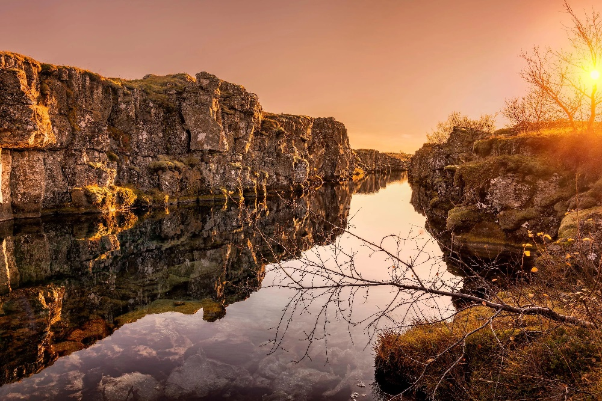
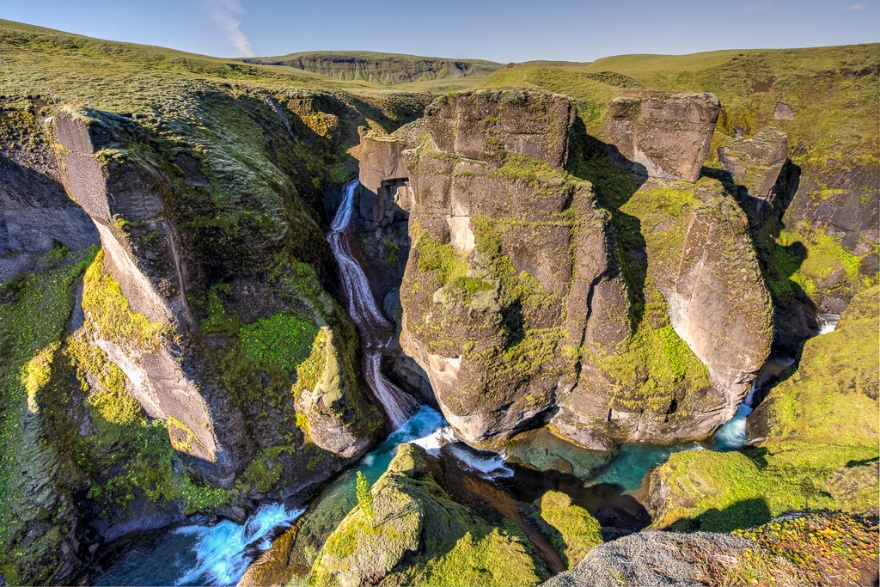
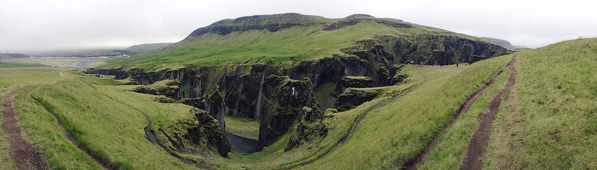
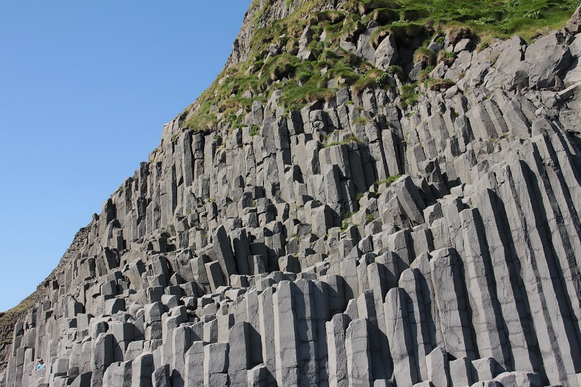
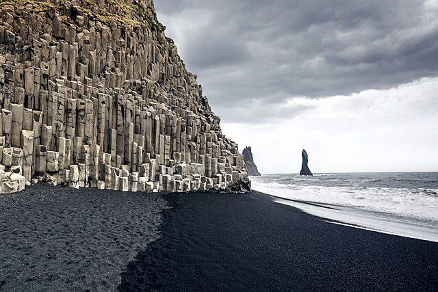

Un limite divergente es aquel que separa dos placas tectónicas ya que se mueven en direcciones opuestas.
Los lugares donde se encuentran estos límites normalmente están en el fondo del mar pero un ejemplo de límite divergente entre placas continentales puede ser sobre las que se encuentra Islandia.
Se sitúa a lo largo de la costura entre las placas de América del Norte y las de Eurasia. La primera se mueve siempre lentamente hacia el oeste, y la última lentamente hacia el este a una velocidad de 2 cm al año.
Thingvellir: Silfra es una fisura que pertenece al borde divergente entre las placas ya dichas. Está enclavada en el lago Þingvallavatn en el Parque nacional Thingvellir. Se formaron gracias a la subducción de las placas tectónicas, es decir cuando una placa oceánica choca contra una placa continental.
Fjaðrárgljúfur: Es un cañón que se encuentra al sureste de la isla. Tiene paredes empinadas y agua sinuosa y alcanza hasta los 100 metros de profundidad y unos dos kilómetros de largo. Su origen se remonta a la Edad de Hielo, hace unos dos millones de años. Fue creado por la erosión progresiva del agua que fluye de los glaciares a través de las rocas y la palagonita durante milenios.
 Reynisdrangar: son pilas marinas de basalto situadas debajo de la montaña Reynisfjall al sur de la isla. Está enmarcada por una playa de arena negra que fue clasificada en 1991 como una de las diez playas no tropicales más bellas del mundo.
 